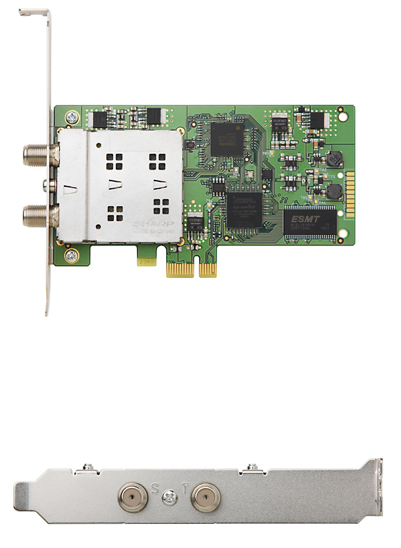
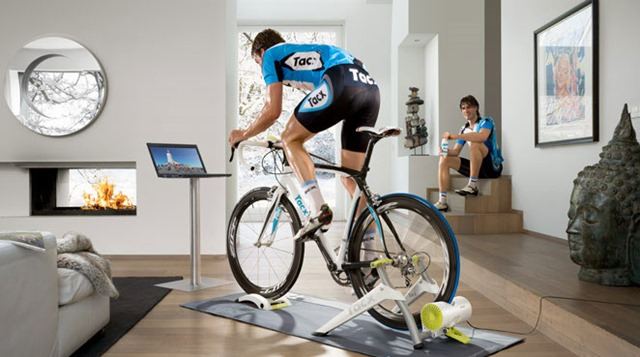

PT3 の存在は前から知っていたのですが、友人のところに遊びにいったらnasune でリモートで録画してあるTED を見せてもらい触発されて思わずポチりました。nasune というのは、nass にTVチューナーが付いて録画できるというもの。
Sony
お値段は、2万弱くらいで購入できるんですが、出来合いの製品だけに面白さにかけるところがあり、またチューナが1チャンネルなので同時録画はできません。
そこで、アースソフトさんがハードとWINDOWS 用のドライバだけ作っている面白い機器が以下。これをポチりました。
アースソフト
ISDB-S 2TS と ISDB-T 2TS の合計 4TS を同時に受信可能です。要するに、衛星デジタル放送用のISDB-S、地上デジタル放送用のISDB-Tがそれぞれ2チャンネルづつ、受信できるという代物。

PC とそれらを受信するソフトウェアやB-CAS カードと読み取るカードリーダなどが必要です。当初はこれらを完全自作しようと思っていましたが、ハードルが高すぎて断念。いつかチャレンジしてみたいお題ではあります。
PT3 を活用するには、いろんな手法がありますが、今のところ方針としてOSはLinuxにし、Chinachu というEPG閲覧と、予約＋Webストリーミング用のUIを備えたソフトウェアの組み合わせで使ってみようと思います。幸い、入れるマシンは余っているものがあるので、追加投資はHDDくらいです。が、これも使ってみないと自分のライフスタイルでどのくらいの容量が必要かはわかりません。今付いているHDDで事足りるかもしれません。
もともと、テレビはほとんど見ませんが、今回はTEDなど面白い番組もやるのでそういうのを予約して視聴するのが目的です。あと、PCに向かいすぎて腰が悪くなので、息抜きを強制的に行うためリビングのTVでごろ寝しながら見て体を休めるという目的もあります。また休めるの反対に鍛えるという目的も盛り込んでも面白いかもしれません。
インストールやセットアップなどの情報はごろごろと出るので、困ることはなさそうです。ただ、自分が使うシーンというのが想像できません。とりあえず、箇条書きにしてみます。出来るといいなと思っている要点は以下です。
・番組予約はPCからさくさくと簡単にやりたい
・外出先のちょっとした空き時間にみたい
・録画した映像は見たら消す感じ or 古いものは自動的に消えるように
・CMをカットするか飛ばせるといいな。またその逆にCMだけコレクションできるようにしたい。
・i-Phone や タブレットで気軽に見たい
・普段使いはOSXのモニタで見て、ゆっくり見たいときはリビングのTVからも見たい
・寝る前に、タブレットでみたい
・録画したデータは飛んでもいいので、RAID1 や5 などはしない。安さ優先
・PCの電源は録画直前に入り、終了したら消える（スリープとか）ようにしたい
・今作成中のWiFi E-ink に録画した番組を表示できるようにしたい。
・電気代を節約するために、自転車の室内ローラで発電し、電力供給をしたい
 ※イメージですが、まぁこんな感じ
Indoor Bike Trainer make とかで検索
・ローラーの前には体重計があって、載れば自動的に記録される仕組みも作りたい。あと１０Kg減量したいのです。
こんな工夫が出来れば、テレビが見たければ、運動しなさいというスタイルにできるかもと思っています。座りっぱなしの生活から、少しは運動もでき、そして結果的にTVの情報ソースを今より見れればと思います。
このプロジェクトは少しづつ進行していきます。
テレビを見たければ運動せよの、ネーミングを考えないとですね。Running Tv ですかね？